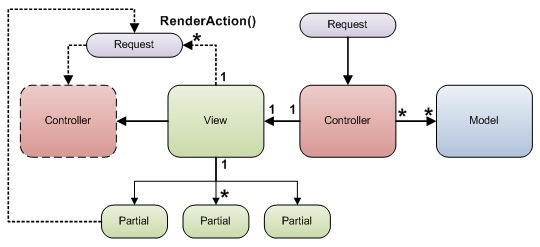
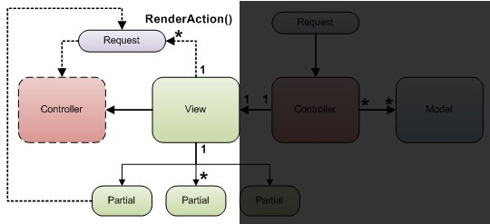

The MVC design pattern is probably the most misunderstood and misinterpreted design pattern. It’s probably due to this that the various implementations of the MVC design pattern are so different. Another way to look at it is that the MVC design pattern is not the most suitable design pattern for web based applications and as a result, many implementations/interpretations of the MVC design pattern go against the original intent. This article is about what I think are the problems with the design and implementation of Microsoft’s ASP.NET MVC framework. I believe that one design flaw leads to a tower of design flaws and as it relates to the ASP.NET MVC implementation, a couple of design flaws have led to many others. Rather than focus on Microsoft’s implementation of the MVC design pattern, I’ll be focusing on system design related issues (independent of the MVC design pattern) from the perspective of Web Application framework design. Figure 1 below shows you the design and control flow of the various parts of the ASP.NET MVC framework.

Figure 1: ASP.NET MVC Design and control flow
List of Problems with ASP.NET MVC
- No access to view or partial view instances
- ViewData is your loosely typed information carrier
- Controller is not really in control
- Child Actions have no sense of the Request Context
- Views are coupled to controllers
- Referencing Layout Pages using virtual paths
- Routing
- Html interspersed with code and code interspersed with html nightmare
- Naming conventions
No Access to View or Partial View instances
I believe this is the first major design flaw (not from an MVC design perspective but rather, just from a framework design perspective) and the cause of a number of other design issues. Because a controller doesn't have access to an instance of the view it enlists, the only way for a controller to communicate information to a view is by using ViewData which is aDictionary<string, object>. So you can stuff anything you want in there, with each “thing” identified by a string key. The two code listings below show you some code that do the same things but in entirely different ways. Code listing 1, shows you the code you'd write in a controller's Action method in ASP.NET MVC and Code listing 2 shows you the code you'd write in a builder's BuildPage() method in Quartz for ASP.NET public ActionResult Index() { /* If a specific features is selected */ if (FeatureId != 0) { var featurePageModel = BusinessModule.GetFeaturePageModel(FeatureId); ViewData["Title"] = featurePageModel.CurrentFeature.Title; ViewData["AdBoxTopViewBoxTitle"] = "More Features"; ViewData["AdBoxTopViewModel"] = featurePageModel.AdBoxModel; ViewData.Model = featurePageModel.CurrentFeature; return View("FeatureDisplay"); } else { var featuresAllPageModel = BusinessModule.GetFeaturesAllPageModel(); ViewData["Title"] = featurePageModel.CurrentFeature.Title; ViewData["AdBoxTopViewBoxTitle"] = "Highlights"; ViewData["AdBoxTopViewModel"] = featuresAllPageModel.AdBoxModel; ViewData.Model = featuresAllPageModel.Features; return View("FeaturesAllView"); } }
Code Listing 1: Showing ASP.NET MVC code in a Controller Action method
protected override void BuildPage(HttpContextBase httpContext, object model) { /* If a specific features is selected */ if (FeatureId != 0) { var featurePageModel = (FeaturePageModel)model; TitleView.Title = featurePageModel.CurrentFeature.Title; AdBoxTopView.BoxTitle = "More Features"; AdBoxTopView.Model = featurePageModel.AdBoxModel; RegisterView("Body", new FeatureDisplayView(httpContext, this, featurePageModel.CurrentFeature)); } else { var featuresAllPageModel = (FeaturesAllPageModel)model; TitleView.Title = "Builder for ASP.NET - Features"; AdBoxTopView.BoxTitle = "Highlights"; AdBoxTopView.Model = featuresAllPageModel.AdBoxModel; RegisterView("Body", new FeaturesAllView(httpContext, this, featuresAllPageModel.Features)); } }
Code Listing 2: Showing Builder for ASP.NET code in a Builder's BuildPage() method
The problems with this (code listing 1) approach are:- The controller can’t ensure that the view and all partial views are looking for (and getting) the data it stuffed in ViewData using the same string keys.
- By looking at the code in the controller's
actionmethod, it is impossible to tell what is really going on, because all you see is a bunch of things added to ViewData, but you can’t tell who is using what (if at all). That is, you can't tell which View and or partial view is using what thing in the dictionary and if this thing (the item in the dictionary) is even the correct type for the other thing (view and/or partial view) using it - No strong typing, and so no type checking, no compile time checks and no IDE navigation help between controller and view's methods and properties, sub classes/super classes
- If the same partial view is used by other controllers then these controllers also need to use the same string keys to stuff their data into ViewData. But there is no way to ensure that at the time of writing or reading code
- If the API of the partial view changes or the names of the keys a partial view relies upon changes there is no way to tell during development time what pages are going to break. In a strongly typed system like .NET a simple Ctrl + Shift + B would highlight all such breaking changes. But this is not the case with ASP.NET MVC due to the loosely typed ViewData
- The controller has to know about all the requirements of the view, partial views, master views as well as any child actions
- Either the view further breaks down your ViewModel into sub viewmodels and hands these sub viewmodels to each of the partial views. Or, every partial view and master view are privy to some other view's data. If you do the former, then the view needs to be aware of what the partial views need (just like the controller needs to know), which means both the controller and view need to know about the partial views, master views and child actions. So that's not any better. Doing the later is not correct either.
The Controller is not really in control
Take a look at Figure 1, and you’ll see that the controller only really talks to the view (via ViewData nonetheless because it never really has access to an instance of the view). It doesn’t control or seemingly know of the partial views this view may in turn enlist, in order to get the job done. But the controller does need to know of the partial views because it has to pass data and instructions to partial views. One could argue separation of concerns here. But I beg to differ because propagating responsibilities down the line makes a system incoherent, unmanageable and a maintenance/debugging nightmare. You have to follow bread crumbs from the controller to the view and from there to other partial views just to get a sense of what is going on and who is doing it and who is using what piece of data (that the controller put into ViewData). A big part of the reason for this design seems to be that the view needs to be compiled (the html + code) and so an instance of the view can only be realized after compiling. However, since the view does not use a code file, the controller won't know how to reference the view since it doesn't have a class type to reference at the time of compilation. One could get around this by having the view descend from one of your own base classes, that way you can reference the view solely as the base type and so the controller can be compiled. But getting an instance of a view (due to the ViewEngine and compilation model) is not that easy. Code listing 3, below shows how you can get an instance of a view. It's pretty convoluted, since it is not the intent of code compilation model.public class HomeController : BaseController { public ActionResult Index() { ViewData["Title"] = "Movies In Theaters"; ViewData["AdvertBoxTopName"] = "Popular Channels"; ViewData.Model = BusinessModule.GetHomePageThumbnails(); ViewEngineResult result = new ViewEngineResult( new RazorViewExt(ControllerContext, "~/Views/Home/Index.cshtml", "~/Views/Shared/LayoutSite.cshtml"), new RazorViewEngine()); return View(result.View); } } public class RazorViewExt : RazorView { public RazorViewExt(ControllerContext controllerContext, string viewPath, string layoutPath) :base(controllerContext, viewPath, layoutPath, false, null) { } protected override void RenderView(ViewContext viewContext, TextWriter writer, object instance) { /* This view descends from BaseHomeIndexView */ BaseHomeIndexView viewInstance = (BaseHomeIndexView)instance; /* viewInstance is now a valid reference to the Home Controller's * Index action's view */ /* The other way to do this is to treat the parameter "instance" * as dynamic */ /* this will allow you to set properties and call methods, * but no strong typing */ dynamic viewInstanceDyn = instance; viewInstanceDyn.SomeProperty = "SomeValue"; base.RenderView(viewContext, writer, instance); } }
Code Listing 3: Getting a reference to an instance of a View
If you created instances of your own classes that implementedIView, then you get all the benefits and none of the demerits. That tells me that the current design (and inability to program in a strongly typed manner and all the other things we've been talking about so far) are due to one or more of the following:
- A design limitation in the way the compilation model/ViewEngine works
- They gave up code files for views (they were there initially) without realizing the down side
- Or, that's how they intended the design to be.
The View is in control
One could argue that (in the ASP.NET MVC design) the view is really in control. Well, at least insofar as the partial views and passing data on to them is concerned. The issues with this reasoning are:- For a view to be in control, the controller needs to know what the view needs, since the view doesn't get its data directly from the model. So once again, concerns have been propagated rather than being confined
- The view is not really in control of the partial views it enlists. The only way it can communicate to a partial view is – you guessed it, ViewData (or a subset of a ViewModel, but we already talked about the issue with that)
RenderAction() / Child Actions
Let me start by stating the problem RenderAction() is trying to solve. Imagine that in your page, you have a menu system. Typically, menu systems are complex because they are contextual and they depend on the user and her access rights and the page she is on. As a result, one could argue that the menu is not the concern of the view. Ok, I could argue either way, but I’ll go along with this argument.

Figure 2: Showing the control flow for RenderAction()
So the view enlists the services of the Child Action (that is RenderAction() really calls out to another action. This action could be in any controller and is not limited to an action in the controller that started the chain reaction. If we’re arguing separation of concerns, then why is the view calling out to a child action in the first place? Further, in order to call out to a child action (using RenderAction()) it has to be completely aware of the data to pass on to it (again using ViewData to extract the correct item(s) or portions of particular item(s). In other words it is coupled to the Child Action. If the child action changes its API (the parameters and/or types of these parameters) all views that call out to this child action that is not supposedly their concern need to change. And in a situation like this that’s pretty much every view in your system! Let’s say for argument sake that the menu controller (and the views and partial views involved) is self sufficient in that it can function completely as expected using information it can get via the Request context (i.e. request path information, query strings, cookies, session, user identity etc.). I would imagine that if the menu system were designed properly, then that is how it would be designed. Well, it so happens, that when you call into a child action, it is a brand new request (it basically goes back out to the entry point of the ASP.NET pipeline and re-enters the pipeline as a brand new request). See Figure 2. The problem with this design is that the context of the original request is completely lost. So the menu controller doesn't get the information it needs. But wait, the original view has to ensure that it sends all of the information it needs when it calls out to it using RenderAction(). Do you see this tsunami rushing back at you? No, ok, If the view has to send the data to the child action, who provides the view with this data? The controller of course! So now every controller and every view in the system are completely aware of and coupled to this supposedly “not your concern” child action. Well, without really being aware, that is. If you look at Figure 2 again, you’ll start to see the flaws in the design by simply looking at the interconnections between the various parts and the flow of control. Compare that with what you see in Figure 3 below

You'll also notice in Figure 2, that the control hands of the job of rendering the menu to the menu controller (the second controller in the figure). The controller doesn't need to know what information or data to provide the second controller because this controller has the complete request context of the original (the same request really) request. The design shown in Figure 3 solves of the issues cited thus far.
- The Controller is in control
- The controller has direct access to all views/partial views, master views etc. as instances of classes
- The Child Action issue doesn't exist
- Routing - Separation of concerns
- Is setting default values for action method parameters the concern of the routing engine or would you rather, the method implementation take care of that? In .NET 4.0 one can even define default parameter values in method signatures.
- Shouldn't on be able to define the routes the controller says it will handle be in the controller rather than in a central location?
- Html and Code interspersed - Well, you either don't mind it or you can't stand it.
- However, the current design forces both. That is, html + code and code + html
- HtmlHelperitis
- Attributeitis
- Rubyitis
Naming conventions
I guess Rubyitis could be blamed for the naming and loose typing conventions in ASP.NET MVC? It is a well known and accepted norm to name method names as verbs or verb phrases. Similarly names of properties should be noun or noun phrases. So while in a controller action method, when you see something calledView. What do you think it is? Is it a property or a method? If it is a method, is it returning something or not? And if it is a method and it is returning something, what is it returning? You can't tell any of this from the name of the method. Yes, it is a name of a method and it returns an ActionResult Now when you’re in a view, you have access to something called View. What do you supposed that is? I'll give you a clue. You could also write: View.Title. Did that help? Or are you even more confused?